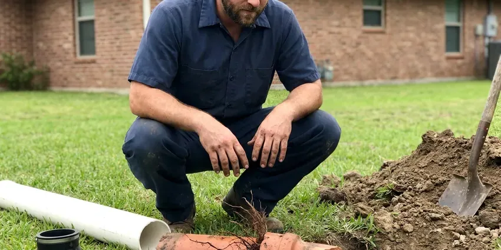

Sewer Repair in Brookside, DE
Gurgling toilets and a sewer smell outside are early warnings. GNV Plumbing runs a camera down the lateral for homes in Brookside, DE.
- Same-Day Sewer Video Checks
- Spot Repair or Full Line Swap
- Licensed Delaware Plumbing Contractor
- Licensed Delaware Plumbers

Cracked or Rooted Sewer Line in Brookside, DE?
One visit to find it, one quote to fix it. Most diagnoses happen the same day.
Sewer Repair for Homes and Rentals in Brookside, DE
GNV Plumbing repairs the lateral that carries everything from your home to the city tap or septic tank. We start with a high-definition camera and a locator. That tells us the depth, the pipe material and the exact spot of the failure, so the quote covers a spot repair, a section replacement or a trenchless liner with real numbers attached. You pick the option.
Our expertise includes:
- Sewer Video Inspection With Depth Locating
- Trenchless Pipe Lining
- Repairs on clay, cast iron, ABS, PVC and Orangeburg lines

Additional Plumbing Repair Services in Brookside, DE
We offer expert plumbing repair services across Brookside, DE to stop leaks, clear blockages, and keep every fixture working the way it should.


Customers
Why Choose GNV Plumbing for Sewer Repair in Brookside, DE?
Sewer work is messy and you will be living with it for a day or two. We keep it short. Plywood goes down on the lawn, spoils go on tarps, and the crew tells you which fixtures you can use while the line is open.
- Video Proof, You see the crack, root mass or belly on screen before you approve a repair.
- Written Quotes, Footage, material, method and price are all on paper before the dig starts.
- Full Equipment, Camera, locator, jetter and excavation gear come on every sewer call.
Citywide Coverage
Homes on slab, homes with basements and homes on crawlspaces all route their sewer differently. Each layout is familiar to us. The camera shows where the building drain leaves the foundation in your Brookside house, which tells us whether the repair is outside, under the floor or right at the wall.
Experienced Team
Our sewer techs have repaired thousands of feet of main line in clay, cast iron, ABS and Orangeburg. They read footage quickly. A tech who has seen hundreds of lines can tell a belly from a break or a root mass from a grease plug in seconds, which is how the diagnosis stays accurate and the quote stays honest.
Safety-First Approach
All repairs are completed to the plumbing code your city has adopted. That includes slope and bedding. When a permit is required we pull it, schedule the inspection, and leave the trench open until the work passes.
Trusted Certified Brookside Plumbing Services Professionals
At GNV Plumbing, we take pride in licensed, certified plumbing services throughout Brookside, DE. Credentials matter in this trade. Our plumbers hold recognized industry credentials, and they follow strict safety and quality rules on every repair, installation and maintenance call we run.
Call Us Now PHCC Plumbing Contractor Recognition
PHCC Plumbing Contractor Recognition Better Business Bureau (BBB) Accreditation
Better Business Bureau (BBB) Accreditation Angi Certified Pro
Angi Certified Pro ISO 9001 Quality Management Certification
ISO 9001 Quality Management CertificationSewer Repair, Job by Job in Brookside, DE
Video Camera Sewer Inspection in Brookside
A self-leveling camera goes in at the cleanout or through a pulled toilet. The full length gets recorded. Cracks, root intrusion, offset joints and standing water all show up on the screen, and the sonde in the camera head lets us mark the exact spot and depth on the ground above, so any excavation stays small and targeted. Older homes in Brookside often hide two or three problems in one line, and the footage shows every one.

Sewer Repair for Commercial Properties in Brookside, DE
Commercial laterals run six inches or larger and carry far more flow than a house. A closed kitchen loses revenue by the hour. For restaurants, strip centers and apartment buildings in Brookside we schedule repairs after hours where we can, set up temporary bypass pumping when the line has to stay in service, and give managers a clear window to share with tenants. We repair a lot of grease-clogged outlet lines.
Commercial Sewer Repair in Brookside
Multifamily buildings and offices put several units' worth of flow through one lateral. Small defects turn into big backups. We repair larger diameter lines, add two-way cleanouts so future maintenance is easy, and give managers recorded footage for owners, insurers and their own files. Night and weekend work is available.
Sewer Camera Inspection in Brookside
Every repair starts with a look inside. We run the camera from the cleanout. You get a copy of the video and a plain written summary of each defect with its distance from the house, which helps if you are buying a home, filing a claim or comparing our price with another company's. It often saves people from repairs they do not need.
Traditional Sewer Line Replacement in Brookside
Some lines are too far gone for a liner. A fully collapsed section is one example. When the camera shows a collapse, a large offset or a belly deep enough to hold several inches of water, we open a trench, remove the old pipe and lay new Schedule 40 PVC on proper bedding at a quarter inch of fall per foot. Older homes often need this on at least one section. The dig is staged so the house is without a sewer for as little time as possible.
Orangeburg and Cast Iron Sewer Replacement in Brookside
Orangeburg is wood fiber soaked in coal tar. Over decades it goes oval and blisters. Cast iron from the same era rusts from the inside, builds scale and eventually splits along the bottom where the sewage runs, so by the time a camera shows widespread damage, spot repairs are a poor investment. We replace these lines with PVC. Trenchless bursting is often an option.
Sewer Line Hydro-Jetting in Brookside
A hydro-jetter pushes water at several thousand psi through a nozzle that scours the full inside of the pipe. A cable only punches a hole. That makes jetting the better choice for grease, scale and fine root growth, and we always jet a line before lining it. Brittle or broken pipe is a different story. We camera first to make sure the pipe can take the pressure.

Trenchless Sewer Line Repair in Brookside, DE
Trenchless repair means we fix the pipe without opening a trench along its full length. Two access holes, sometimes one. Pipe bursting pulls a new HDPE line through the old one and splits the old pipe outward, while cured-in-place lining pushes a resin-soaked felt tube into the old pipe and hardens it into a new wall. Both save driveways and mature trees. Not every line qualifies, and we will say so.
Sewer Line Repair Near Me in Brookside, DE
Our Brookside crew knows how deep laterals usually run around here and which neighborhoods still have clay or cast iron. It saves time once we dig. It also means fewer surprises when the trench is open, since we already expect the transition fittings and bedding the old pipe will need.
You want a crew that shows up, finds the problem and fixes it without a week of back and forth. We built our sewer service around that. One tech diagnoses it on camera, the same company does the dig and the repair, and you are not stuck coordinating a drain cleaner, an excavator and a plumber yourself.
GNV Plumbing at a Glance
- Licensed and insured plumbers serving Brookside, DE
- Same-day appointments and 24/7 emergency response
- Clear written estimates, no hidden fees
- 4.8-star rated by 849+ Delaware customers
Brookside Map
Brookside Information
- Population
- 14,974
- Area codes
- Local
- Service area
- Brookside and communities within 40 miles
- Nearby
- Newark, Bear, Pike Creek Valley, Glasgow
Sewer laterals in Brookside, DE take a beating from tree roots and settling ground, and old joints are the first to give. Sandy soil drains quickly but can shift and settle, which may stress buried sewer lines and water service pipes over time.
Talk to a Plumber
Call GNV Plumbing for honest, reliable plumbing from people who know the trade in Brookside, DE.
Our Specialized Plumbing Services in Brookside, DE
At GNV Plumbing, you get every kind of plumbing service from one company across Brookside, DE. We go from leak detection all the way to full system installations, for homes and commercial buildings, and we do it quickly at a fair price. Take a look at our core services below:


How a Sewer Repair Goes in Brookside, DE
Every sewer repair in Brookside follows the same order: camera, quote, repair, test.
Book the Visit
Call (302) 406-6354 and describe the backups, odors or slow drains. Most visits happen the same day or the next.
Inspect
We camera the lateral from the cleanout and locate every defect. You watch the footage with us.
Pick the Repair
We lay out spot repair, lining or replacement with prices. The decision is yours.
Frequently Asked Questions About Sewer Repair in Brookside
Clearing a clog can be as little as $300. Structural repairs cost more. Replacing a long run with trenchless methods can run $6,000 or higher, because the price climbs with footage, pipe material, access and whether any excavation is needed at all. You get a firm number after we camera the line.
Usually, yes. Line replacements almost always need a permit. A permit means an inspector looks at the pipe, the slope and the bedding before backfill, and that record helps when you sell or file a claim. The permit and the inspection are on us.
It is a repair done without opening a trench along the whole pipe. Two small pits, usually. Cured-in-place lining and pipe bursting are the two common methods, and both keep most of the yard, the driveway and the trees undisturbed. The video shows whether it will work for you.
We use Schedule 40 PVC or ABS that meets local code. Transitions get shielded couplings. The coupling has to match the outside diameter of both pipes, and for lining work we use epoxy-saturated liners that cure into a rigid, jointless pipe inside the host. Everything we use is listed for underground sewer.
Tree roots are the top cause in established neighborhoods. Sandy soil drains quickly but can shift and settle, which may misalign buried sewer lines and water service pipes over time. Old pipe fails too. Cast iron rusts from the inside and clay joints separate, while grease, wipes and paper towels build up on rough or sagging sections until the line closes off. It is usually a combination.
Clearing a soft clog with a rental auger is one thing. Repairing the pipe is another. Sewer work means trenching near buried utilities, working around raw sewage and meeting code on slope, bedding and fittings, and in Brookside the work often needs a permit and an inspection before the hole can be closed. A mistake underground stays hidden until it fails.
A rental auger can open a soft clog. It will not fix a crack. Forcing a cable through a broken or offset joint can snag, tear the pipe further or leave a cutter head stuck underground, which turns a camera visit into an excavation job. Repeat clogs deserve a video inspection.
Major repairs and replacements in Brookside, DE usually require one. Small fixes sometimes do not. Rules differ on whether a short spot repair on private property needs a permit, but any work in the public right-of-way or at the connection to the main almost always does. We confirm the requirement before we start.
What Our Customers Say About Our Plumbing Experts

Karen W.
After our third pinhole leak in copper, we stopped patching. GNV Plumbing gave us a written plan room by room and repiped the house in PEX while we stayed in it. The crew covered our floors every morning and cleaned up every night.
Repiping · Brookside, DE
Lisa C.
Water was pouring out from under the washing machine on a holiday weekend. GNV Plumbing talked me through closing the valves over the phone and had a plumber at the house within ninety minutes. It was a burst fill hose.
Emergency Plumbing · North Star, DE
Greg S.
I manage a small strip center with six tenants. GNV Plumbing handles our annual backflow testing and fixed a recurring clog in the shared sewer line that had been backing into the nail salon. Their reports come in clean and on time.
Commercial Plumbing · Pike Creek, DE
Tyler J.
We bought a taller comfort height toilet for my dad, who just had knee surgery. The plumber pulled the old one, found the flange was cracked, and replaced it before setting the new bowl. Took about two hours.
Toilet Installation · Glasgow, DECarlos V.
Our house still had galvanized pipe, and upstairs the shower was a trickle. The crew repiped everything in PEX over three days and patched every drywall hole before they left. The pressure difference is night and day.
Repiping · Glasgow, DE
Laura S.
Our 40 gallon tank started leaking from the bottom after thirteen years. The tech hauled the old one out, set a new unit with a fresh expansion tank, and had hot water running in about four hours. He took the old tank with him too.
Water Heater Replacement · Glasgow, DE